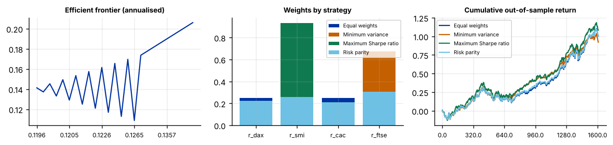

Run this model on your own data in Open Econometric Systems →
Step 1The question and the model
Does optimising beat not optimising? Given mean returns \(\mu\) and a covariance matrix \(\Sigma\), Markowitz (1952) chooses weights \(w\) with \(\sum_i w_i = 1\):
| Strategy | Weights |
|---|---|
| Equal weights | \(w_i = 1/N\) |
| Minimum variance | \(\min_w w'\Sigma w\); unconstrained solution \(w \propto \Sigma^{-1}\mathbf 1\) |
| Maximum Sharpe ratio | \(\max_w (w'\mu - r_f)/\sqrt{w'\Sigma w}\); unconstrained solution \(w \propto \Sigma^{-1}(\mu - r_f)\) |
| Risk parity | each asset contributes the same share \(w_i(\Sigma w)_i/w'\Sigma w = 1/N\) |
The problem is that \(\mu\) and \(\Sigma\) are estimated, and the optimiser puts large weights where the estimates are most favourable (and most wrong). Three remedies are standard: shrink the covariance matrix towards a structured target (Ledoit and Wolf 2004), forbid short positions, and use strategies that need no means (minimum variance, risk parity, equal weights). The test of any of them is the out-of-sample performance: estimate on a rolling window, hold the weights for a month, and compare the realised returns.
How to write it: the model
We compare four strategies on the daily returns of four European stock indexes: equal weights, minimum variance, maximum Sharpe ratio and risk parity, all long-only and estimated with a Ledoit-Wolf shrunk covariance matrix. The sampling uncertainty of the weights is measured by a bootstrap that resamples the periods with replacement. The out-of-sample comparison estimates the weights on the previous 250 days, holds them for 21 days and rolls forward; the Sharpe-ratio differences from equal weights are tested with the Jobson-Korkie test with Memmel's correction.
Step 2Load the data
import numpy as np
import pandas as pd
import oes_engine as oes # pip install -e open-econometric-systems/oes-engine
d = pd.read_csv("eustock.csv")
assets = ["r_dax", "r_smi", "r_cac", "r_ftse"]
data = d[["t"] + assets].to_csv(index=False)
print(len(d), "daily log returns; prices run from", d.DAX.iloc[0].round(0), "(DAX) to", d.DAX.iloc[-1].round(0))
print((100 * d[assets].agg(["mean", "std"])).round(3))
print("annualised Sharpe ratios:", (d[assets].mean() / d[assets].std() * np.sqrt(252)).round(2).to_dict())
print(d[assets].corr().round(2))1859 daily log returns; prices run from 1614.0 (DAX) to 5474.0
r_dax r_smi r_cac r_ftse
mean 0.065 0.082 0.044 0.043
std 1.030 0.925 1.103 0.796
annualised Sharpe ratios: {'r_dax': 1.0, 'r_smi': 1.4, 'r_cac': 0.63, 'r_ftse': 0.86}
r_dax r_smi r_cac r_ftse
r_dax 1.00 0.70 0.73 0.64
r_smi 0.70 1.00 0.62 0.58
r_cac 0.73 0.62 1.00 0.65
r_ftse 0.64 0.58 0.65 1.00How to read it
The sample has 1,859 daily log returns for the German DAX, Swiss SMI, French CAC and British FTSE from 1991 to 1998, a period in which all four rose strongly (the DAX from 1,614 to 5,474). The SMI has the best annualised Sharpe ratio (1.4), the CAC the worst (0.63) and the FTSE the lowest volatility (0.80% a day). The markets are highly correlated (0.58 to 0.73), so diversification gains are limited.
Step 3Estimate the portfolios
spec = dict(assets=assets, time="t", boot=300, seed=1)
r = oes.run("portfolio", data, spec)
oes.summary(r)
oes.show(r, "Portfolio weights")Periods: 1859
Assets: 4
Max-Sharpe in-sample Sharpe: 1.405
Max-Sharpe out-of-sample Sharpe: 1.192
Portfolio weights and in-sample performance (annualised)
r_dax r_smi r_cac r_ftse Return Volatility Sharpe ratio Effective number of assets Largest risk share
Strategy
Equal weights 2.5000e-01 0.2500 0.2500 0.2500 0.1474 0.1317 1.1186 4.0000 0.2931
Minimum variance 1.1000e-05 0.3270 0.0000 0.6730 0.1407 0.1196 1.1765 1.7861 0.6730
Maximum Sharpe ratio 1.3996e-02 0.9345 0.0000 0.0515 0.2005 0.1427 1.4048 1.1413 0.9606
Risk parity 2.2201e-01 0.2604 0.2124 0.3051 0.1468 0.1289 1.1384 3.9163 0.2500
Note: Covariance: Ledoit-Wolf shrinkage; long only; 1859 periods, 252 per year.How to read it
In sample, the maximum-Sharpe portfolio puts 93% in the SMI (weights: DAX 1%, SMI 93%, CAC 0%, FTSE 5%), earns 20.1% a year with volatility 14.3% and a Sharpe ratio of 1.40; its effective number of assets is only 1.1. The minimum-variance portfolio holds the two least volatile markets (SMI 33%, FTSE 67%), with volatility 12.0% and Sharpe 1.18. Equal weights and risk parity are spread across all four assets (effective number about 4) with Sharpe ratios of 1.12 and 1.14. The maximum-Sharpe portfolio looks best because it is the one fitted to this sample.
Step 4How certain are the weights?
oes.show(r, "Sampling uncertainty")
oes.plot(r)Sampling uncertainty of the maximum sharpe ratio weights (bootstrap, 300 resamples)
Weight 2.5% 97.5% Share of resamples with weight < 1%
Asset
r_dax 0.0140 0.0000 0.6005 0.5900
r_smi 0.9345 0.2448 1.0000 0.0067
r_cac 0.0000 0.0000 0.1315 0.9200
r_ftse 0.0515 0.0000 0.5611 0.5367
Note: Resampling the periods with replacement and re-solving the problem each time.
How to read it
The bootstrap shows how little the maximum-Sharpe weights are determined by the data. The SMI weight has a 95% interval from 0.24 to 1.00; the DAX and FTSE weights range from 0 to 0.60 and 0.56. The CAC weight is below 1% in 92% of the resamples and the DAX weight in 59%: the optimiser puts the money in whichever market looked best in each resample. This is the estimation-error problem: means are estimated imprecisely (a daily mean has a standard error of about 0.02 percentage points, a third of its size), and the optimiser acts on the noise. The chart plots the weights of the four strategies.
Step 5The honest test: out of sample
oes.show(r, "Out-of-sample")Out-of-sample performance (1609 periods, window 250, rebalancing every 21)
Return Volatility Sharpe ratio Turnover per rebalance Worst period z vs equal weights p
Strategy
Equal weights 0.1574 0.1330 1.1834 0.0000 -0.0449 NaN NaN
Minimum variance 0.1445 0.1202 1.2018 0.0872 -0.0461 0.1198 0.9046
Maximum Sharpe ratio 0.1698 0.1424 1.1922 0.3997 -0.0436 0.0505 0.9597
Risk parity 0.1567 0.1297 1.2086 0.0169 -0.0451 1.0868 0.2771
Note: Weights are estimated on the previous window only. The z statistic is the Jobson-Korkie test of the Sharpe-ratio difference with Memmel's correction.How to read it
Out of sample, the picture is different. All four strategies earn very similar Sharpe ratios: 1.18 for equal weights, 1.20 for minimum variance, 1.19 for maximum Sharpe and 1.21 for risk parity. The in-sample Sharpe ratio of the maximum-Sharpe portfolio, 1.40, falls to 1.19 out of sample. None of the differences from equal weights is statistically significant (z between 0.05 and 1.09; p between 0.28 and 0.96). The optimised portfolios differ in how they get there: the maximum-Sharpe portfolio trades 40% of the portfolio at each monthly rebalancing (turnover 0.40), minimum variance 9% and risk parity only 1.7%, which matters if there are trading costs. Minimum variance and risk parity reduce volatility (12.0% and 13.0% against 13.3%) at a small cost in return.
Step 6Robustness: shorting, shrinkage and the window
for label, extra in (("short positions allowed, sample covariance", dict(long_only="no", shrink="none")), ("long only, sample covariance", dict(shrink="none")),
("long only, Ledoit-Wolf, window 500", dict(window=500)), ("long only, Ledoit-Wolf, window 120", dict(window=120))):
rr = oes.run("portfolio", data, dict(spec, boot=0, **extra))
print("---", label)
for row in rr["tables"][-1]["rows"]:
print(f" {row[0]:22s} return {row[1]:6.3f} volatility {row[2]:6.3f} Sharpe {row[3]:5.2f} turnover {row[4]:5.2f}")--- short positions allowed, sample covariance Equal weights return 0.157 volatility 0.133 Sharpe 1.18 turnover 0.00 Minimum variance return 0.146 volatility 0.120 Sharpe 1.22 turnover 0.13 Maximum Sharpe ratio return 0.053 volatility 1.400 Sharpe 0.04 turnover 10.17 Risk parity return 0.157 volatility 0.130 Sharpe 1.21 turnover 0.02 --- long only, sample covariance Equal weights return 0.157 volatility 0.133 Sharpe 1.18 turnover 0.00 Minimum variance return 0.142 volatility 0.120 Sharpe 1.18 turnover 0.09 Maximum Sharpe ratio return 0.169 volatility 0.143 Sharpe 1.18 turnover 0.41 Risk parity return 0.157 volatility 0.130 Sharpe 1.21 turnover 0.02 --- long only, Ledoit-Wolf, window 500 Equal weights return 0.178 volatility 0.133 Sharpe 1.33 turnover 0.00 Minimum variance return 0.156 volatility 0.120 Sharpe 1.31 turnover 0.05 Maximum Sharpe ratio return 0.162 volatility 0.143 Sharpe 1.13 turnover 0.29 Risk parity return 0.176 volatility 0.130 Sharpe 1.35 turnover 0.01 --- long only, Ledoit-Wolf, window 120 Equal weights return 0.162 volatility 0.131 Sharpe 1.24 turnover 0.00 Minimum variance return 0.151 volatility 0.119 Sharpe 1.27 turnover 0.15 Maximum Sharpe ratio return 0.142 volatility 0.141 Sharpe 1.00 turnover 0.75 Risk parity return 0.162 volatility 0.128 Sharpe 1.27 turnover 0.03
How to read it
Short positions. Allowing short positions with the sample covariance matrix wrecks the maximum-Sharpe portfolio: volatility of 140% a year, a Sharpe ratio of 0.04 and a turnover of 10 times the portfolio at each rebalancing, because the unconstrained solution takes huge leveraged positions on noisy means. Minimum variance, which needs no means, is unaffected (Sharpe 1.22).
Shrinkage. With long-only positions and the sample covariance, the results are very close to those with shrinkage; with four assets and 250 days the covariance matrix is well estimated, and shrinkage matters more when the number of assets is large.
Window. With a 500-day window the Sharpe ratios are 1.33 (equal weights), 1.31 (minimum variance), 1.13 (maximum Sharpe) and 1.35 (risk parity); with a 120-day window they are 1.24, 1.27, 1.00 and 1.27. The strategy that uses means is the worst in both and gets worse as the window shortens, which is what estimation error predicts. The ranking of the other three changes with the window, a sign that their differences are noise.
Step 7Diagnostics: the estimation-error problem in a simulation
# 20 assets, 250 daily observations to estimate the weights, true Sharpe ratios drawn at random
rng = np.random.default_rng(0)
N, T, reps = 20, 250, 200
A = rng.normal(size=(N, N)); C = (A @ A.T / N + np.eye(N)) * 1e-4
sd = np.sqrt(np.diag(C)); mu = 0.5 * sd * rng.normal(0.05, 0.03, N) * 1.0
out = {"equal": [], "minvar": [], "maxsharpe": []}
from numpy.linalg import solve
def true_sharpe(w): return (w @ mu) / np.sqrt(w @ C @ w)
for k in range(reps):
R = rng.multivariate_normal(mu, C, T)
m, S = R.mean(0), np.cov(R.T)
for name, w in (("equal", np.ones(N) / N), ("minvar", solve(S, np.ones(N))), ("maxsharpe", solve(S, m))):
w = w / w.sum()
out[name].append(true_sharpe(w) * np.sqrt(252))
print("true annualised Sharpe ratio of the portfolios estimated from 250 days (mean over 200 samples):")
for name, v in out.items():
print(f" {name:10s} {np.mean(v):6.2f}")
w_opt = solve(C, mu); w_opt /= w_opt.sum()
print(" best possible (true weights)", round(true_sharpe(w_opt) * np.sqrt(252), 2))true annualised Sharpe ratio of the portfolios estimated from 250 days (mean over 200 samples): equal 1.74 minvar 1.83 maxsharpe 1.05 best possible (true weights) 2.32
How to read it
In a simulation with 20 assets (best possible Sharpe ratio 2.32), the true Sharpe ratio of a portfolio estimated from 250 days of data is 1.74 for equal weights, 1.83 for minimum variance and 1.05 for the maximum-Sharpe weights, averaged over 200 samples. With many assets and a short sample, the portfolio that uses the estimated means is by far the worst, even though it is the optimal one for the sample: a result in the spirit of DeMiguel, Garlappi and Uppal (2009). The test suite checks the unconstrained weights against the closed forms \(\Sigma^{-1}\mathbf 1\) and \(\Sigma^{-1}\mu\), the equalisation of risk contributions in risk parity and the out-of-sample equal-weight returns against a manual calculation.
Step 8Write the results
How to write it: results
We compare four long-only strategies on the daily returns of the DAX, SMI, CAC and FTSE, 1991 to 1998 (1,859 days), with a Ledoit-Wolf covariance matrix. In sample, the maximum-Sharpe portfolio has an annualised Sharpe ratio of 1.40, but its weights are imprecise (the SMI weight is 0.93 with a bootstrap 95% interval of 0.24 to 1.00). Estimating on a rolling 250-day window and holding for 21 days, the out-of-sample Sharpe ratios are 1.18 (equal weights), 1.20 (minimum variance), 1.19 (maximum Sharpe) and 1.21 (risk parity); none differs significantly from equal weights (Jobson-Korkie p between 0.28 and 0.96), and the maximum-Sharpe portfolio trades 40% of the portfolio a month against 2% for risk parity. Allowing short positions makes the maximum-Sharpe portfolio unusable (volatility 140%, Sharpe 0.04). In a simulation with 20 assets and 250 days of data the maximum-Sharpe weights deliver a true Sharpe ratio of 1.05 against 1.74 for equal weights.
References. Markowitz (1952), Journal of Finance; Ledoit and Wolf (2004), Journal of Multivariate Analysis; DeMiguel, Garlappi and Uppal (2009), Review of Financial Studies; Jobson and Korkie (1981), Journal of Finance; Memmel (2003), Applied Economics Letters; Maillard, Roncalli and Teïletche (2010), Journal of Portfolio Management; Michaud (1989), Financial Analysts Journal.